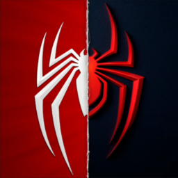

 Marvel's Spider-Man
Details
 |
|
| Playtime | Not Played |
| Last Activity | Never |
| Added | 4/15/2022 19:45:05 |
| Modified | 8/17/2025 16:40:11 |
| Completion Status | #Want to Play |
| Library | Playnite |
| Source | PlayStation |
| Platform | Sony PlayStation 4 |
| Release Date | 9/7/2018 |
| Community Score | 88 |
| Critic Score | 90 |
| User Score | |
| Genre | Hack and slash/Beat 'em up |
| Developer | Insomniac Games |
| Publisher | Sony Computer Entertainment |
| Feature | Single Player |
| Links | Official Website Wikipedia Twitch Wikia Youtube |
| Tag | Action Action-Adventure Adventure Atmospheric Beautiful Combat Comic Book Controller Exploration Funny Great Soundtrack Multiplayer Open World Parkour Sci-fi Singleplayer Stealth Story Rich Superhero Third Person |
Description
Developed by Insomniac Games in collaboration with Marvel, and optimized for PC by Nixxes Software, Marvel's Spider-Man Remastered on PC introduces an experienced Peter Parker who’s fighting big crime and iconic villains in Marvel’s New York. At the same time, he’s struggling to balance his chaotic personal life and career while the fate of Marvel’s New York rests upon his shoulders.
Be Greater
When iconic Marvel villains threaten Marvel’s New York, Peter Parker and Spider-Man’s worlds collide. To save the city and those he loves, he must rise up and be greater.
Feel like Spider-Man
After eight years behind the mask, Peter Parker is a crime-fighting master. Feel the full power of a more experienced Spider-Man with improvisational combat, dynamic acrobatics, fluid urban traversal and environmental interactions.
Worlds collide
The worlds of Peter Parker and Spider-Man collide in an original action-packed story. In this new Spider-Man universe, iconic characters from Peter and Spider-Man’s lives have been reimagined, placing familiar characters in unique roles.
Marvel’s New York is your playground
The Big Apple comes to life in Marvel’s Spider-Man. Swing through vibrant neighborhoods and catch breathtaking views of iconic Marvel and Manhattan landmarks. Use the environment to defeat villains with epic takedowns in true blockbuster action.
Enjoy The City That Never Sleeps complete content
Following the events of the main story of Marvel’s Spider-Man Remastered, experience the continuation of Peter Parker’s journey in Marvel’s Spider-Man: The City That Never Sleeps, three story chapters with additional missions and challenges to discover.
PC Optimized Graphics
Enjoy a variety of graphics quality options to tailor to a wide range of devices, unlocked framerates, and support for other technologies including performance boosting NVIDIA DLSS and image quality enhancing NVIDIA DLAA. Upscaling technology AMD FSR 2.0 is also supported.
Ray-traced reflections and improved shadows*
See the city come to life with improved shadows and stunning ray-traced reflection options with a variety of quality modes to choose from.
Ultra-wide Monitor support**
Take in the cinematic sights of Marvel’s New York with support for a range of screen setups, including 16:9, 16:10, 21:9, 32:9, and 48:9 resolutions with triple monitor setups using NVIDIA Surround or AMD Eyefinity.
Controls and Customization
Feel what it’s like to play as Spider-Man through immersive haptic feedback and dynamic trigger effects using a PlayStation DualSense™ controller on a wired USB connection. Enjoy full mouse and keyboard support with various customizable control options.
*Compatible PC required
**Compatible PC and display device required.
Key Features
Be Greater
When iconic Marvel villains threaten Marvel’s New York, Peter Parker and Spider-Man’s worlds collide. To save the city and those he loves, he must rise up and be greater.
Feel like Spider-Man
After eight years behind the mask, Peter Parker is a crime-fighting master. Feel the full power of a more experienced Spider-Man with improvisational combat, dynamic acrobatics, fluid urban traversal and environmental interactions.
Worlds collide
The worlds of Peter Parker and Spider-Man collide in an original action-packed story. In this new Spider-Man universe, iconic characters from Peter and Spider-Man’s lives have been reimagined, placing familiar characters in unique roles.
Marvel’s New York is your playground
The Big Apple comes to life in Marvel’s Spider-Man. Swing through vibrant neighborhoods and catch breathtaking views of iconic Marvel and Manhattan landmarks. Use the environment to defeat villains with epic takedowns in true blockbuster action.
Enjoy The City That Never Sleeps complete content
Following the events of the main story of Marvel’s Spider-Man Remastered, experience the continuation of Peter Parker’s journey in Marvel’s Spider-Man: The City That Never Sleeps, three story chapters with additional missions and challenges to discover.
PC Features
PC Optimized Graphics
Enjoy a variety of graphics quality options to tailor to a wide range of devices, unlocked framerates, and support for other technologies including performance boosting NVIDIA DLSS and image quality enhancing NVIDIA DLAA. Upscaling technology AMD FSR 2.0 is also supported.
Ray-traced reflections and improved shadows*
See the city come to life with improved shadows and stunning ray-traced reflection options with a variety of quality modes to choose from.
Ultra-wide Monitor support**
Take in the cinematic sights of Marvel’s New York with support for a range of screen setups, including 16:9, 16:10, 21:9, 32:9, and 48:9 resolutions with triple monitor setups using NVIDIA Surround or AMD Eyefinity.
Controls and Customization
Feel what it’s like to play as Spider-Man through immersive haptic feedback and dynamic trigger effects using a PlayStation DualSense™ controller on a wired USB connection. Enjoy full mouse and keyboard support with various customizable control options.
*Compatible PC required
**Compatible PC and display device required.